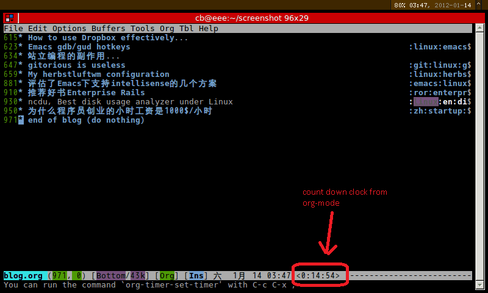

Hotkeys for moving windows in emacs
See http://www.emacswiki.org/emacs/WindMove for details.
My hotkeys are different from emacswiki because:
- I was a vi guy, I prefer H,J,K,L for navigation.
- Arrow keys does not work on my terminal simulators.
Here is my hotkeys:
(when (fboundp 'windmove-left) (global-set-key "\C-ch" 'windmove-left) (global-set-key "\C-cj" 'windmove-down) (global-set-key "\C-ck" 'windmove-up) (global-set-key "\C-cl" 'windmove-right))
Note: C-c j is originall hokey of function join-line.
Copy/Paste in Emacs
Table of Contents
CREATED:
UPDATED:
See http://www.emacswiki.org/emacs/CopyAndPaste for discussion.
1 Prepare
For Emacs console version under Linux, xsel is required.
For Emacs GUI version on any OS, NO external tool is needed.
For Emacs under Cygwin, you need install its package "cygutils-extra".
For Emacs console version under OS X, NO external tool is needed.
2 Solution
This solution works reliably at any environment.
Insert below code into ~/.emacs. Use 'M-x yank-to-x-clipboard' to copy, 'M-x paste-from-xclipboard' to paste.
(setq *is-a-mac* (eq system-type 'darwin))
(setq *cygwin* (eq system-type 'cygwin) )
(setq *linux* (or (eq system-type 'gnu/linux) (eq system-type 'linux)) )
(defun copy-to-x-clipboard ()
(interactive)
(if (region-active-p)
(progn
(cond
((and (display-graphic-p) x-select-enable-clipboard)
(x-set-selection 'CLIPBOARD (buffer-substring (region-beginning) (region-end))))
(t (shell-command-on-region (region-beginning) (region-end)
(cond
(*cygwin* "putclip")
(*is-a-mac* "pbcopy")
(*linux* "xsel -ib")))
))
(message "Yanked region to clipboard!")
(deactivate-mark))
(message "No region active; can't yank to clipboard!")))
(defun paste-from-x-clipboard()
(interactive)
(cond
((and (display-graphic-p) x-select-enable-clipboard)
(insert (x-get-selection 'CLIPBOARD)))
(t (shell-command
(cond
(*cygwin* "getclip")
(*is-a-mac* "pbpaste")
(t "xsel -ob"))
1))
))
(defun my/paste-in-minibuffer ()
(local-set-key (kbd "M-y") 'paste-from-x-clipboard)
)
(add-hook 'minibuffer-setup-hook 'my/paste-in-minibuffer)
3 Advanced Tips
3.1 Clipboard manager
Clipboard manager is handy sometimes.
I suggest parcellite at Linux, ditto under windows.
Here is my parcellite setup ($HOME/.config/parcellite/parcelliterc):
[rc]
use_copy=true
use_primary=true
synchronize=true
save_history=true
history_limit=64
hyperlinks_only=false
confirm_clear=false
single_line=true
reverse_history=false
item_length=50
ellipsize=2
history_key=<Super>Y
actions_key=
menu_key=
history_pos=false
history_x=1
history_y=1
case_search=false
type_search=false
data_size=0
ignore_whiteonly=false
trim_wspace_begend=false
trim_newline=false
3.2 Remote clipboard
Use below command to ssh the Linux server. Then you can share the clipboard between the server and your local computer seamlessly. No furthe setup needed.
ssh -X -C -c blowfish-cbc,arcfour $@
The most important features of Midnight Commander (MC)
Since I was a big fan of Total Commander (TC), I priorize the MC's feature according to my TC's experience.
Here is the list (C = Ctrl, M = Alt, S = Shift):
| Feature | MC | TC |
|---|---|---|
| Bookmark | C-\, then "New Entry" | C-D |
| Quick Search | C-s or M-s | C-M-firstcharacteroffilename |
| Find File | M-? | M-F7 |
| Select Files by Pattern | + (- will unselect files) | C-F12 |
| Mkdir | F7 | F7 |
| Create New File with Vim | Shift-F4 | Shift-F4 |
| Edit File with Vi | F4 (See Use vi as Default Editor) | F4 (need configuration) |
| View File | F3 | F3 |
| Copy File Name | M-w (See mc.keymail.emacs | No hotkey |
| Copy Full Path to CLI | C-S-Enter | Don't know |
| Directory History | M-h (actually history of all the commands | Don't know |
Start wxWdigets programming on Windows
- Download wxWidgets
- Extracted it somewhere. "c:\wxWidgets-2.8.12", for example.
- Create environment variable WXWIN with value "c:\wxWidgets-2.8.12"
- Install Visual Studio (Express version is fine if you installed WIN32 SDK too)
- Compile wxWidgets library by running the dos batch file:
@echo off call "C:\Program Files (x86)\Microsoft Visual Studio 10.0\VC\bin\vcvars32.bat"nmake -f %WXWIN%\build\msw\makefile.vc UNICODE=1 BUILD=debug
nmake -f %WXWIN%\build\msw\makefile.vc UNICODE=1 BUILD=release
We use vcvars32.bat to set up the CLI tool chains.
"Unicode=1" because our application will support i18n.
- Install CMake
- Create a simple project with files main.cpp, main.hpp, CMakeLists.txt
main.cpp and main.hpp containts normal C++ code.
CMakeLists.txt is the project file for CMake:
PROJECT(main)CMAKE_MINIMUM_REQUIRED(VERSION 2.6)
# sets variable SOURCES to the project source files.
set(XRCS main_frame.xrc )
set(XRCS_DIR ${main_SOURCE_DIR}/rc)
if(CMAKE_COMPILER_IS_GNUCC) # needed for gcc 4.6+ set(CMAKE_CXX_FLAGS "${CMAKE_CXX_FLAGS} -fpermissive") endif()
set( CPP_SOURCES main.cpp )
set( H_SOURCES main.hpp ) )
set(SOURCES ${CPP_SOURCES} ${H_SOURCES} )
# xrc -> xml, adv, html
set(wxWidgets_USE_LIBS xrc xml adv html core base)
find_package(wxWidgets REQUIRED)
include(${wxWidgets_USE_FILE})
#try to embed resource
foreach(XRC $latex {XRCS}) string(REGEX REPLACE "[.].*$" ".h" XRC_HEADER ${XRC}) set(XRC_HEADER ${CMAKE_CURRENT_BINARY_DIR}/${XRC_HEADER}) set(XRC ${XRCS_DIR}/${XRC}) add_custom_command(OUTPUT ${XRC_HEADER} COMMAND bin2c -c ${XRC} ${XRC_HEADER} MAIN_DEPENDENCY ${XRC} ) set(SOURCES ${SOURCES} ${XRC_HEADER}) endforeach(XRC)
set(INC )
if(UNIX AND NOT APPLE) include(FindPkgConfig) pkg_check_modules(GTK2 REQUIRED gtk+-2.0>=2.10) set(INC ${INC} ${GTK2_INCLUDE_DIRS}) endif()
#add other librarie
include_directories(${INC})
if(UNIX) add_definitions(-Wno-write-strings) endif()
if(WIN32) # WIN32 := subsystem is windows instead of console? add_executable(main WIN32 ${SOURCES}) else(WIN32) add_executable(main ${SOURCES}) endif()
set(LIBS ${wxWidgets_LIBRARIES} )
if(MINGW AND WIN32) set(LIBS ${LIBS} ole32 uuid oleaut32) endif()
target_link_libraries(main ${LIBS})
- Running the below dos batch the create Visual Studio Project Files
@echo offcall "C:\Program Files (x86)\Microsoft Visual Studio 10.0\VC\bin\vcvars32.bat"
cmake path/of/directory/which/contains/CMakeLists.txt/
- Enjoy!
BTW, for other systems, see wxWiki.
Always turn on "-fpermissive" for GCC 4.6
Below code will get error message if compiled by gcc 4.6+:
"const A" as 'this' argument of "void A::a()' discards qualifiers [-fpermissive]
class A
{
void a();
}
class B
{
virtual void b() const;
}
class MyClass:public B
{
A _a;
virtual b() const
{
_a.a(); //gcc complains here!
}
}
Since I cannot modify class A and B, I need add "-fpermission" to CXX_FLAG. Here is my cmake code,
if(CMAKE_COMPILER_IS_GNUCC)
# needed for gcc 4.6+
set(CMAKE_CXX_FLAGS "${CMAKE_CXX_FLAGS} -fpermissive")
endif()
Clean up emacs mode line for tiny netbook
Emacs's status bar is called the mode-line.
It contains too much information for me because my screen is tiny (I use the netbook Eee PC 701 whose LCD resolution is 800x480).
For example, org-mode will append some information at the mode-line which is beyond my tiny screen.
See customizing the mode-line for the solution to clean up the mode-line.
But there is one problem. The variable "global-mode-string" is missing in mode-line, so my favourite org-mode goodie "M-x org-timer-set-timer" won't work.
Here is my fixed version.
- screenshot

- Elisp code
;; @see http://emacs-fu.blogspot.com/2011/08/customizing-mode-line.html
;; But I need global-mode-string,
;; @see http://www.delorie.com/gnu/docs/elisp-manual-21/elisp_360.html
;; use setq-default to set it for /all/ modes
(setq-default mode-line-format
(list
;; the buffer name; the file name as a tool tip
'(:eval (propertize "%b " 'face 'font-lock-keyword-face
'help-echo (buffer-file-name)))
;; line and column
"(" ;; '%02' to set to 2 chars at least; prevents flickering
(propertize "%02l" 'face 'font-lock-type-face) ","
(propertize "%02c" 'face 'font-lock-type-face)
") "
;; relative position, size of file
"["
(propertize "%p" 'face 'font-lock-constant-face) ;; % above top
"/"
(propertize "%I" 'face 'font-lock-constant-face) ;; size
"] "
;; the current major mode for the buffer.
"["
'(:eval (propertize "%m" 'face 'font-lock-string-face
'help-echo buffer-file-coding-system))
"] "
"[" ;; insert vs overwrite mode, input-method in a tooltip
'(:eval (propertize (if overwrite-mode "Ovr" "Ins")
'face 'font-lock-preprocessor-face
'help-echo (concat "Buffer is in "
(if overwrite-mode "overwrite" "insert") " mode")))
;; was this buffer modified since the last save?
'(:eval (when (buffer-modified-p)
(concat "," (propertize "Mod"
'face 'font-lock-warning-face
'help-echo "Buffer has been modified"))))
;; is this buffer read-only?
'(:eval (when buffer-read-only
(concat "," (propertize "RO"
'face 'font-lock-type-face
'help-echo "Buffer is read-only"))))
"] "
;;global-mode-string, org-timer-set-timer in org-mode need this
(propertize "%M" 'face 'font-lock-type-face)
" --"
;; i don't want to see minor-modes; but if you want, uncomment this:
;; minor-mode-alist ;; list of minor modes
"%-" ;; fill with '-'
))
#+./image/2012-01-14-034733-800x480.png  *
*
为什么程序员创业的小时工资是1000$/小时
读了A Smart Bear的两篇文章后的简写.
第一篇,你的时间价值1000$每小时:
- 如果你投资自己的时间做一个金钱回报在未来的项目,项目成功概率不是100%,你得假设你的小时工资是你1000$每小时
- 简单数学计算的结果,回报X概率/项目开发时间
- 否则还不如做别人的项目.
- 结论是你的时间非常宝贵,必需只用来做最重要的事.
第二篇,尽可能外包是唯一解决之道:
- 只要可能,尽量外包,唯一例外是你的核心代码
- 程序员有自动化任务的习惯,很多时候和人力外包相比不值得
- 记住你的小时工资是1000$每小时
- 例如,做市场/技术方案调查时,很多工作可以外包.节省的金钱时间是惊人的.
- 设定任务和最后期限及具体的流程
- 作者偏爱菲律宾人,因为英语好,盗窃知识产权的风险不大
ncdu, Best disk usage analyzer under Linux
The size of the package is only 56K. UI is easy.
Use j,k to navigate.
Here is the software information:
Name : ncdu Version : 1.8-1URL : http://dev.yorhel.nl/ncdu/
Licenses : custom:MIT
Depends On : ncurses
Packager : Gaetan Bisson <bisson@archlinux.org>
Description : Disk usage analyzer with an ncurses interface
评估了Emacs下支持intellisense的几个方案
我的结论,Emacs23自带的semantic简单可用.
Cedet1.0
(require 'semantic-ia)后一些函数可用.
我没有试出来,和我安装的emacs是terminal版本有关(Cedet下的semantic-ia需要一个GUI介面的popup-menu).
这也是游人探讨Auto Complete接合semantic-ia的原因,因为AutoComplete已经完美实现了popup-menu.
缺点,semantic做后台语法解析的时候emacs会失去响应几妙种(我的硬件配置很好,intel i3 双核,4G内存),有时候会导致emacs退出.
Emacs23自带的semantic
没有semantic-ia.
semantic-analyze-possible-completion(快捷键为C-c , l)较符合要求,可惜这个函数只是打印候选字符串在另一个buffer.需用hippie-expand(快捷键为M-/)选择.
启动semantic-mode在emacs23中很简单,M-x semantic-mode即可.
Clang
速度极快,AutoComplete 上有几个接合Clang和AutoComple的方案(其中一个 为clang官方提供演示原理,我不建议使用).
通过elpa安装auto-complete-clang,试用后非常完美,智能且响应速度极快,支持Mac/Cygwin/Linux.
如果做语法实时检查,可以用flymake,需要提供完整的CXXFLAG给clang.如果用CMake生成Makefile的话,可在flags.make中轻易得到.
顺便说一下,我个人非常喜爱CMake,是构建打包配置管理的最佳工具.我以后所有的C++项目都将用CMake.
推荐好书Enterprise Rails
Dan Chak写的Enterprise Rails很不错.作者在Amazon工作过.
他的观点独特,但是论据充分推理严密.
简介可参考亚马逊的这篇书评. 简略地翻译成中文的意思就是Dan Chak推荐的方法是Anti-Rails的.
例如他对MySQL不感冒,"如果要用数据库,就用PostgreSQL,用PostgreSQL的DDL,不用Ruby写的Migration Script,结束"
我对于他的某些观点还没有完全接受,但是相当值得重视.
例如,他强烈建议将decoractor code转移到plugin module中,充分利用ruby的管理机制.他完全反对使用git的submodule机制来代替.
这点我现在身有体会,git-submodule 给我带来的麻烦参考这里(git submodule告诉我子模块版本A可用，但是该版本不是正式的发布版本，因为没有这样的强制机制，事实是A不存在或者被某人误删了，于是我惨了） 解决办法可以类比于ruby(现在语言是elisp),使用emacs自带的包管理机制elpa而不是git-submodule.